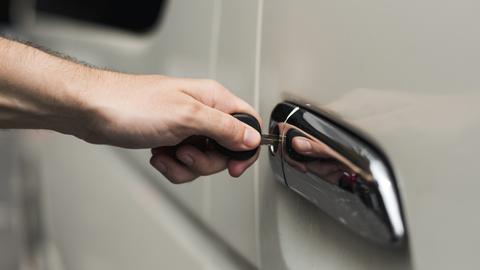

Skoda · Kielce i okolice
Kluczyk Skoda w Kielcach – dorabianie, kodowanie i kluczyki KESSY
Octavia, Fabia czy Superb często jeżdżą latami i zmieniają właścicieli – a kluczyki nie zawsze idą za nimi w komplecie. Dorabiamy i kodujemy kluczyki Skoda w wielu modelach, także do systemu KESSY, a to, co da się zrobić w Twoim aucie, sprawdzimy po numerze VIN.
Dorabianie kluczyka Skoda – jak to wygląda
Kluczyk do Skody to nie tylko nacięty metal. W środku jest chip immobilizera, który trzeba zapisać w aucie, a w większości kluczyków także pilot centralnego zamka. Gdy samochód ma system KESSY, nowy kluczyk musi zostać zapisany również w nim. Dorabianie i kodowanie kluczyka Skoda wykonujemy przy samochodzie – przyjeżdżamy do Ciebie w Kielcach i okolicy, a termin umawiamy przez telefon.
Skoda korzysta z wielu rozwiązań Grupy Volkswagen, dlatego jej kluczyki często wyglądają jak te z Volkswagena czy Seata. Podobny wygląd nie oznacza zgodności: o tym, czy kluczyk zadziała, decydują m.in. rodzaj chipa, częstotliwość pilota i profil grota. Zanim cokolwiek zamówimy, sprawdzimy po numerze VIN, który kluczyk pasuje do Twojej Skody. Właścicielom Volkswagenów polecamy stronę kluczyki Volkswagen.
Kluczyki w Octavii, Fabii, Superbie i innych modelach
W Skodach spotkasz głównie dwa rodzaje kluczyków:
- Kluczyk składany z pilotem – metalowy grot chowa się w obudowie i wyskakuje po wciśnięciu przycisku. Przez lata był typowy dla wielu generacji Fabii, Octavii czy Superba. Silnik uruchamiasz, przekręcając kluczyk w stacyjce.
- Kluczyk do systemu KESSY – nazwa to skrót od Keyless Entry, Start and exit SYstem. Auto rozpoznaje kluczyk w pobliżu: odblokowuje się po chwyceniu klamki, a silnik uruchamiasz przyciskiem, bez wyjmowania kluczyka z kieszeni. KESSY montowano m.in. w Octavii trzeciej generacji, Superbie i Kodiaqu, a w nowszych modelach, takich jak Octavia czwartej generacji czy Enyaq, system zyskał też automatyczne odblokowanie po podejściu do auta. Taki kluczyk też ma mechaniczny grot – wysuwany lub schowany w obudowie – do awaryjnego otwarcia drzwi.
To, czy Twoja Skoda ma KESSY, zależy od wyposażenia, a nie tylko od modelu – dwie Octavie z tego samego rocznika mogą mieć zupełnie inne kluczyki. Dlatego przy wycenie zawsze pytamy, jak otwierasz i uruchamiasz auto.
Na co skarżą się właściciele Skód
- Pilot nie działa po wymianie baterii – w kluczykach KESSY instrukcja przewiduje w takiej sytuacji synchronizację kluczyka z autem. Sposób znajdziesz w instrukcji obsługi swojego modelu; dopiero gdy to nie pomoże, kluczyk może wymagać ponownego kodowania.
- Słaba bateria – zależnie od kluczyka jest to zwykle płaska bateria CR2032 lub CR2025. Przed zakupem odczytaj oznaczenie na starej baterii – pomoże też poradnik wymiana baterii w kluczyku.
- Auto nie wykrywa kluczyka KESSY – drzwi otworzysz mechanicznym grotem kluczyka, a uruchomienie przy rozładowanym kluczyku opisuje instrukcja: zależnie od modelu kluczyk przykłada się do oznaczonego miejsca albo do przycisku uruchamiania. Więcej w artykule kluczyk keyless nie działa.
- Zużyty kluczyk składany – luźny grot, pęknięta obudowa, wytarte przyciski. Jeśli elektronika jest sprawna, często wystarczy nowa obudowa.
Co zrobimy przy Twojej Skodzie
Zakres pracy zależy od modelu i rocznika, ale w wielu Skodach możemy:
- dorobić zapasowy kluczyk do kompletu – składany albo do systemu KESSY;
- wykonać nowy kluczyk, gdy zgubiony kluczyk Skoda był jedynym – zobacz utrata wszystkich kluczyków;
- usunąć z pamięci auta kluczyki, których nie masz – ważne przy aucie kupionym z jednym kluczykiem (jak sprawdzić kluczyki w używanym aucie);
- wymienić obudowę i ponownie zakodować pilota;
- zająć się otwieraniem Skody, gdy kluczyki zostały w środku albo w bagażniku – najczęściej dekoderem do zamka, bez niszczenia drzwi i szyb (otwieranie samochodów);
- pomóc, gdy przyczyną kłopotów jest immobilizer lub sterownik (sterowniki i immobilizery).
Nie każdą Skodę obsłużymy w ten sam sposób. W części najnowszych modeli kluczyk może być dostępny wyłącznie w ASO – jeśli tak będzie w Twoim przypadku, powiemy to od razu, przez telefon. Cenę podajemy przed rozpoczęciem pracy.
Skoda poleasingowa lub z drugiej ręki – o czym pamiętać
Sporo Skód trafia na rynek wtórny po leasingu albo z flot firmowych. Takie auta nierzadko mają tylko jeden kluczyk, a drugi został u poprzedniego użytkownika albo zaginął. Warto wtedy dorobić zapas i przy okazji usunąć z pamięci kluczyk, którego nie masz – zgubiony egzemplarz przestanie uruchamiać silnik.
Przed przyjazdem przygotuj:
- numer VIN (pole E w dowodzie rejestracyjnym), model i rocznik;
- informację, czy auto otwierasz dotknięciem klamki i uruchamiasz przyciskiem;
- wszystkie kluczyki, które mają działać dalej;
- dowód osobisty i dowód rejestracyjny, a przy aucie firmowym lub leasingowym – upoważnienie. Bez potwierdzenia, że auto jest Twoje, nie otwieramy go i nie kodujemy kluczyków.
Usługi dla aut Skoda

Otwieranie samochodów
Kluczyki zamknięte w kabinie lub bagażniku, rozładowany akumulator, zamek, który nie reaguje – otwieramy auto całą dobę.
SzczegółyDorabianie i kodowanie kluczy
Zapasowy kluczyk z chipem, pilot, keyless – dorabiamy i kodujemy, a zgubione kluczyki usuwamy z pamięci auta.
SzczegółyUtrata wszystkich kluczyków
Nie został żaden kluczyk? Otwieramy auto, przygotowujemy i kodujemy nowy, a zgubiony usuwamy z pamięci.
SzczegółySterowniki i immobilizery
Auto nie odpala lub nie widzi kluczyka – naprawa i wymiana sterownika silnika, prace przy immobilizerze.
SzczegółyPytania i odpowiedzi
Co to jest KESSY?
Po wymianie baterii kluczyk nie otwiera Skody. Trzeba go kodować?
Czy kluczyk od Volkswagena lub Seata będzie pasował do mojej Skody?
Kupiłem używaną Octavię z jednym kluczykiem. Co zrobić?
Przydatne porady
Zapasowy kluczyk do samochodu – dlaczego warto go mieć
Jeździsz z jednym kluczykiem? Zapasowy kluczyk do samochodu zrobiony na spokojnie to niewielki wydatek w porównaniu z kłopotem, gdy jedyny kluczyk zginie albo się zepsuje.
Czytaj · 4 min Kluczyki samochodoweWymiana baterii w kluczyku samochodowym – krok po kroku
Pilot działa coraz słabiej? Wymiana baterii w kluczyku to zwykle kilka minut pracy. Pokazujemy, jak zrobić to bezpiecznie, jaką baterię kupić i co zrobić, gdy po wymianie kluczyk nadal nie działa.
Czytaj · 4 min Kluczyki samochodoweUżywane auto z jednym kluczykiem? Sprawdź kluczyki i immobilizer
Używane auto z jednym kluczykiem to częsty widok w ogłoszeniach. Zanim podpiszesz umowę, sprawdź, ile kluczyków dostajesz, czy każdy działa i czy immobilizer nie budzi wątpliwości.
Czytaj · 5 minInne marki
Nazwa marki Skoda służy wyłącznie do opisu, do jakich aut wykonujemy usługi. Nie jesteśmy autoryzowanym serwisem tej marki.
Potrzebujesz pomocy teraz?
Zadzwoń – powiemy, ile to potrwa i ile będzie kosztować, zanim wyjedziemy.